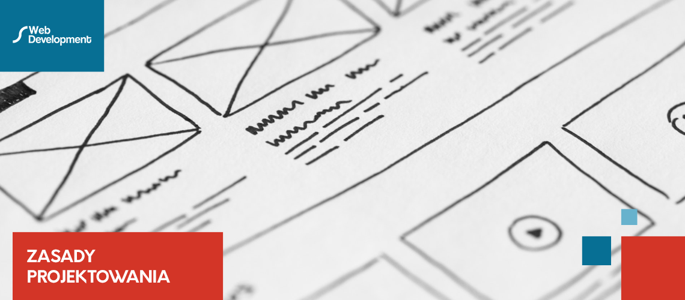

Osiem podstawowych zasad tworzenia stron internetowych!
Wdrożenie poniższych wskazówek da stronie internetowej większą szansę na pokazanie swojej oferty zainteresowanym osobom
oraz pozyskanie potencjalnego klienta. Projektując lub przeprojektowując stronę internetową, łatwo jest ugrzęznąć w
estetyce. (Ten odcień zielonego po prostu nie wygląda najlepiej.... Czy nie byłoby wspaniale, gdybyśmy umieścili logo na
górze po prawej stronie?... A może by tak umieścić animację w środku strony?). Jeśli naprawdę chcesz dobrze zaprojektować
swoją stronę internetową: dotrzeć do możliwie dużej liczby adresatów, na których Ci naprawdę zależy (optymalny profil
targetu osobowego), chcesz zwiększyć liczbę odwiedzin, wygenerować leady itp.), to musisz zająć się czymś więcej niż
tylko wyglądem i stylem Twojej strony internetowej. Żyjemy w świecie z ponad miliardem stron internetowych, na których
odwiedzający mogą potencjalnie wylądować. Dlatego szczególnie ważne jest, aby naprawdę dobry projekt był łatwy w
obsłudze. Twoja strona internetowa musi być łatwa w użyciu. Jednocześnie bezpośrednie doświadczenie użytkownika musi być
pozytywne. Odwiedzanie strony www powinno być przyjemne i, w zależności od jej zawartości, może nawet zabawne.
Oczywiste jest, że funkcjonalność i użyteczność strony oraz reakcje i emocje ich użytkowników to dyscypliny same w sobie. Możesz spędzić lata na badaniach, aby zrozumieć ich złożoność. Chcemy dać Ci kilka jasnych wskazówek, jak znaleźć drogę do osiągnięcia zamierzonego celu, jaki jest stworzenie optymalnej dla Twoich celów strony internetowej. Dlatego też poniżej znajdziesz listę zasad użyteczności dla użytkownika (user experience) i jego pozytywnych wrażeń, które możesz zastosować przy każdym kolejnym projekcie tworzenia stron internetowych.
Oczywiste jest, że funkcjonalność i użyteczność strony oraz reakcje i emocje ich użytkowników to dyscypliny same w sobie. Możesz spędzić lata na badaniach, aby zrozumieć ich złożoność. Chcemy dać Ci kilka jasnych wskazówek, jak znaleźć drogę do osiągnięcia zamierzonego celu, jaki jest stworzenie optymalnej dla Twoich celów strony internetowej. Dlatego też poniżej znajdziesz listę zasad użyteczności dla użytkownika (user experience) i jego pozytywnych wrażeń, które możesz zastosować przy każdym kolejnym projekcie tworzenia stron internetowych.
